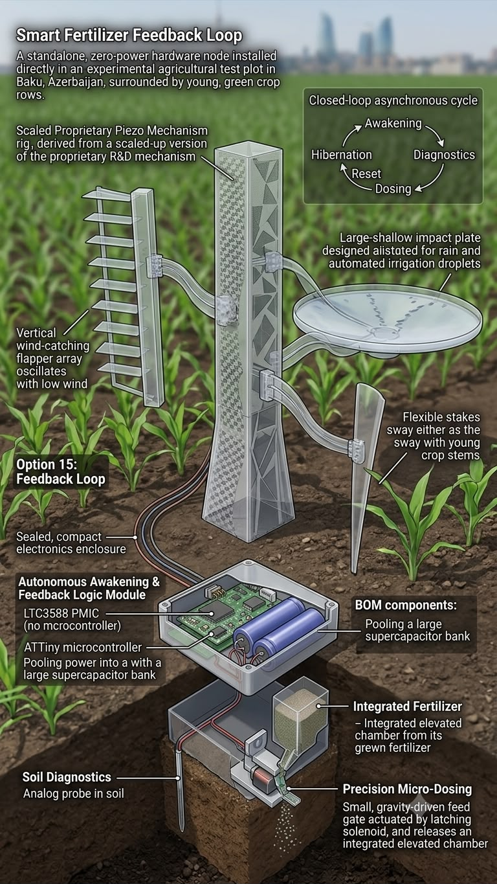

Torpaq Loop
Smart Fertilizer Feedback LoopTorpaq Loop is a standalone, battery-free hardware node that brings precision fertilization to fields with zero external power. It runs entirely on kinetic energy harvested from wind, rainfall, and crop-stem vibration through a piezoelectric mechanism, allowing it to operate indefinitely in areas without grid access.
A piezo generator feeds a dedicated energy-harvesting chip (LTC3588) that stores micro-charges in a supercapacitor. Once enough energy has built up, the system briefly wakes from deep sleep, reads a soil moisture or acidity sensor, and — only if the soil actually needs it — releases a precise micro-dose of fertilizer through an ultra-low-power actuator, such as a bistable solenoid valve, gravity doser, or piezo micro-pump. The system then returns to sleep and the cycle repeats.
Because every stage is designed around microamp-level consumption, Torpaq Loop needs no batteries, no wiring, and no maintenance visits — just the energy already present in the field. The first working prototype is being built for roughly 40–72 AZN in components, following a frugal-innovation approach that keeps the technology accessible.
- Zero external power — runs on wind, rain, and biomass vibration
- Closed sleep–wake–measure–dose feedback loop
- Precision micro-dosing, only when the soil needs it
- Frugal, low-cost, and field-repairable design
